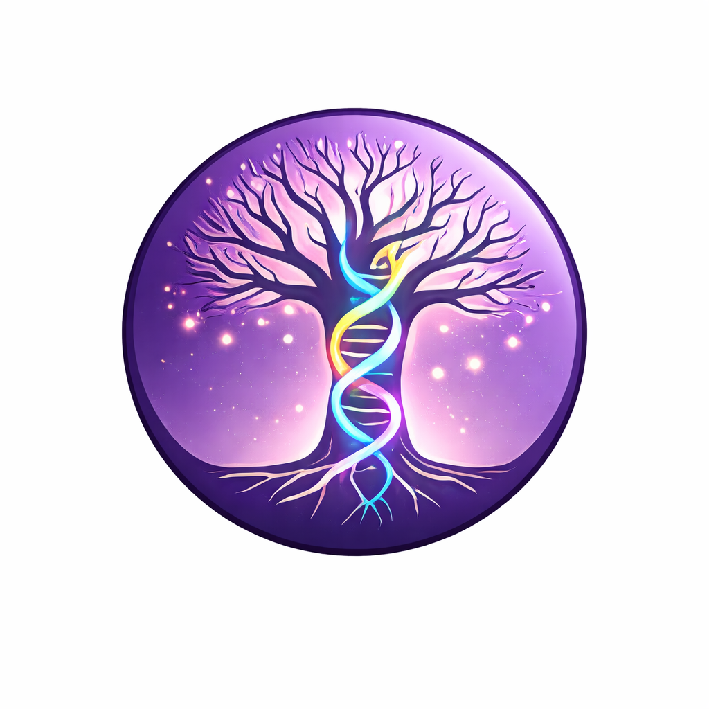
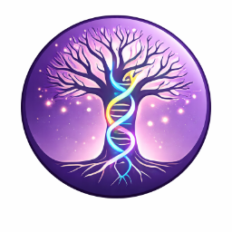

Locked asset. The brand mark is the supplied illustration. Only auxiliary versions (favicon crop, dark-mode placement, mono) are derived from it.
Brand mark
Roundel — primary application across all surfaces.
primary · roundel

Horizontal lockup
Mark + wordmark — for headers, footers, signatures.
horizontal · light
horizontal · dark
Auxiliary
Favicon crop, scale ladder, dark surface placement.
mark · scale
24406496160
favicon · 32px crop

Tight crop of the roundel for browser tabs and app icons.
on dark surface
on checker
Verifies the roundel reads cleanly without a dedicated background panel.
on brand purple
Alternate executions · same Tree+DNA
Companion versions for surfaces the full-color medallion can't go — single-colour print, foil, embroidery, tiny favicons. The mark itself is unchanged.
mono · brand purple
Solid purple medallion
For 1-colour print, embossing, foil stamping, anywhere process colour is unavailable.
mono · ink on cream
Ink medallion
For sober contexts: legal documents, citation footers, archival certificates.
reverse · knockout white
White medallion
For dark surfaces — app splash, video opens, dark email headers.
tonal · lilac wash
Tonal wash
Quieter placement for marketing pages where the full medallion would dominate.